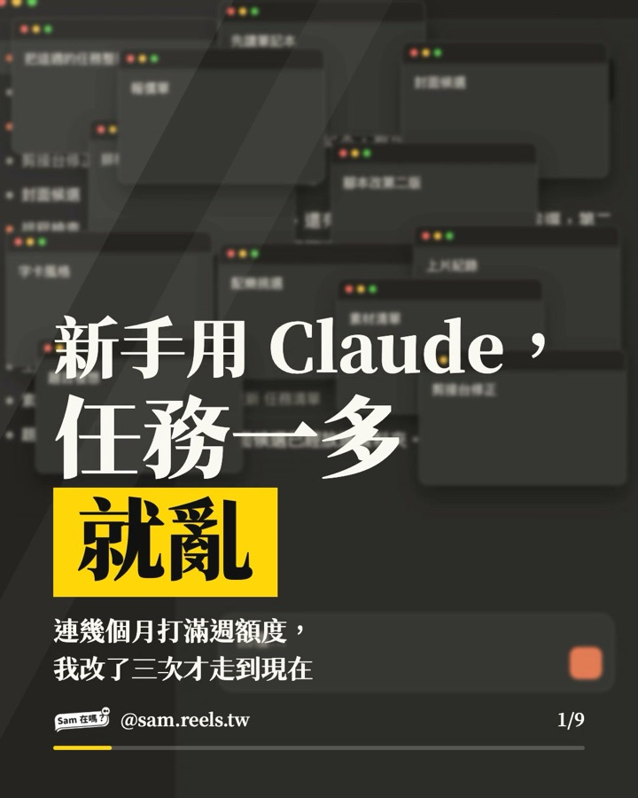
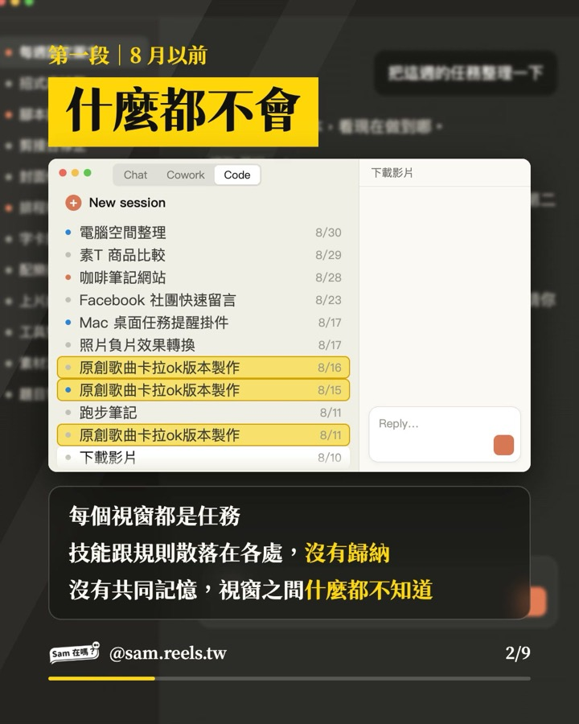
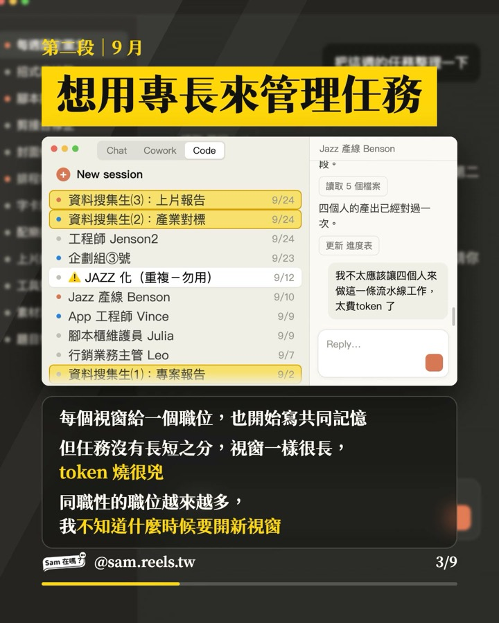
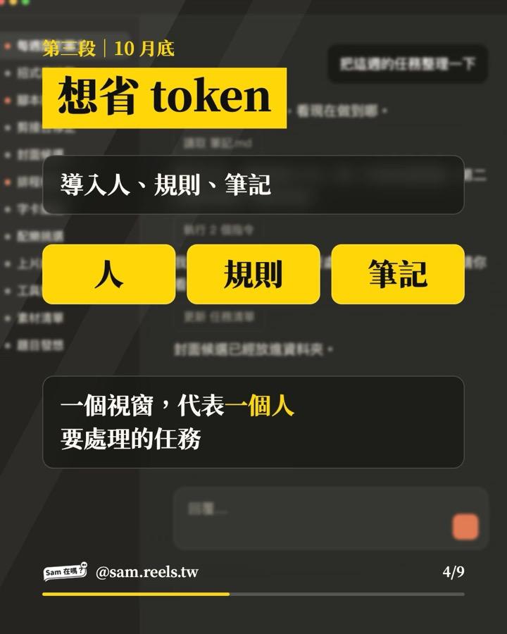
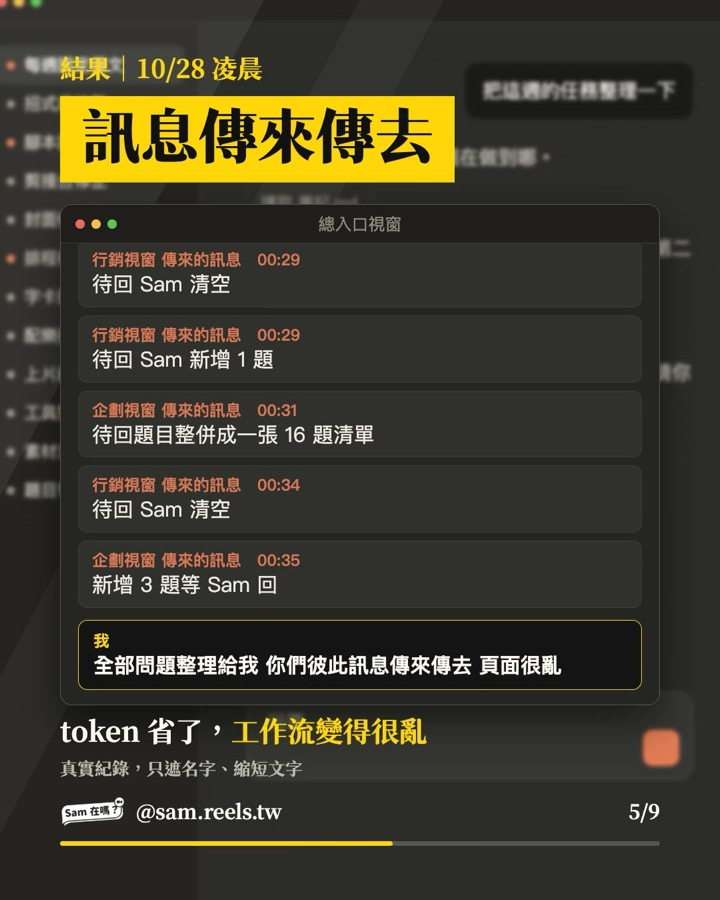
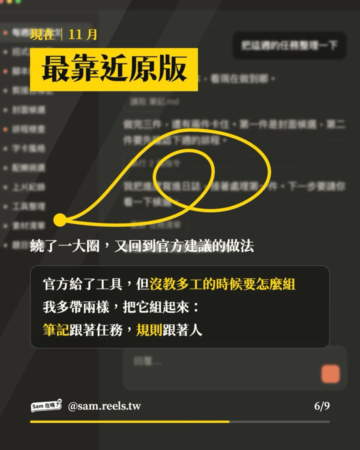
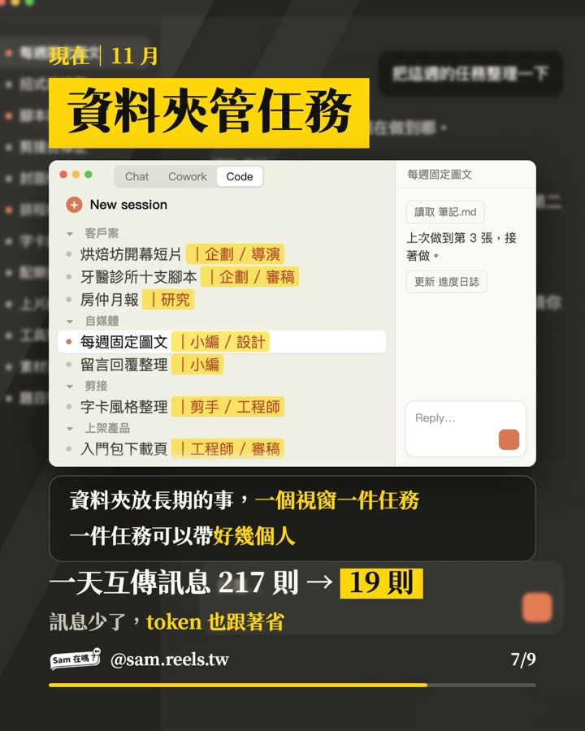
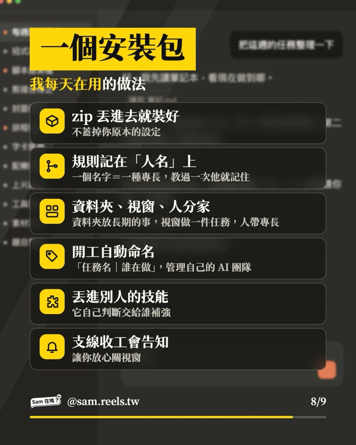
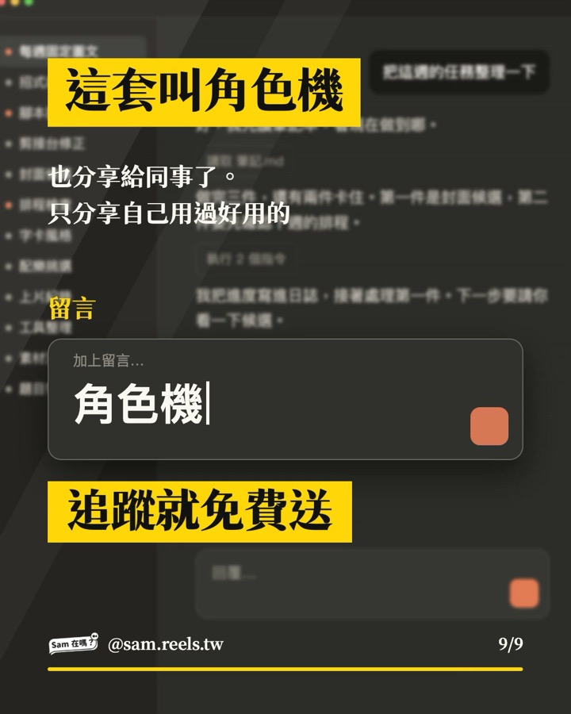
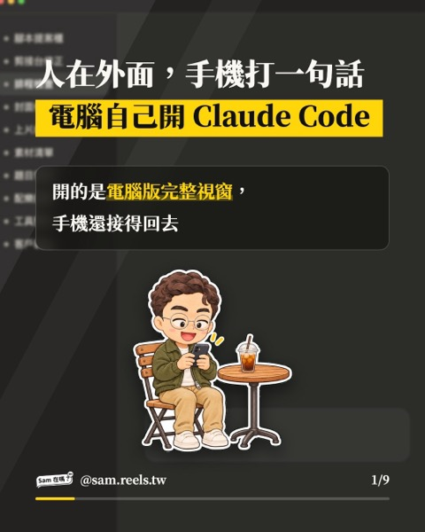

Claude 任務一多就亂？
角色機入門包 免費領
讓 Claude 換視窗也不失憶：每件事開一個視窗，規則和進度記在檔案裡，新視窗一打開就接得上。
要準備：Mac，裝好 Claude 桌面 App 或 Claude Code（要 Claude 付費方案，Pro 月費約台幣 650，自己到官網訂）。
用 Windows？還沒測過，先 LINE 問我。
用 Windows？還沒測過，先 LINE 問我。









← 左右滑看 9 張 →
裝好你會有
- 你糾正過一次的事，它記進那個人的規則，下次新視窗不用再講
- 每個視窗開工先讀最近 2 天的進度，接著昨天做，不用你重講做到哪
- 一件事一個視窗，標題寫「任務名｜誰在做」，一眼看出誰在忙什麼（標題這項限桌面 App）
- 收工前沒寫筆記、沒記進度，它會先擋一次提醒
怎麼裝（約 5 分鐘）
- 下載角色機的 zip
- 開一個 Claude 視窗，把 zip 拖進去，打「幫我裝角色機，叫我小明」（換成你的稱呼）
- 它先講會改什麼，你說好才裝；不蓋掉你原本的設定，改之前先備份
附贈兩個小工具

手機叫電腦開視窗 選裝人在外面，手機打一句話，家裡電腦就開好 Claude 視窗。要用桌面 App 的遠端控制，裝角色機時會先問你要不要。看設定步驟 →
合蓋不休眠 提示詞筆電蓋起來，Claude 照樣繼續跑。要 macOS 13 以上、Claude Code，設定時要輸入一次電腦密碼。看提示詞 →
怎麼領
或到角色機那篇貼文留言「角色機」，我私訊給你。
也免費：剪接招式庫
500 多招短影音剪接招式，Claude 照招幫你剪
看怎麼領 →
看怎麼領 →
要管 LINE 客戶群組？
IG 私訊我傳「P」
領「LINE 追專案」安裝包
領「LINE 追專案」安裝包
卡住了？LINE @sam.reels.tw 問我，問問題不收錢。